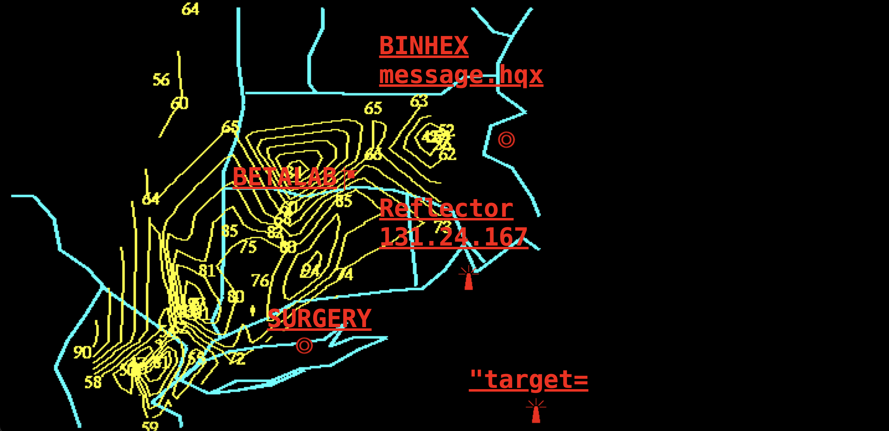
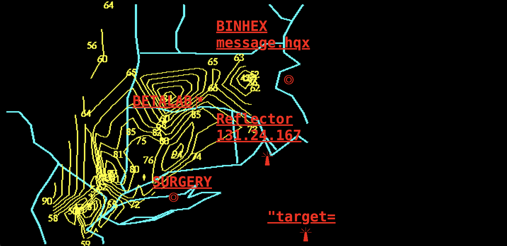

My%Desktop
 

Presented as a black-and-white, frame-based hypertext narrative, the piece tells a fragmented story of a couple reuniting after the boyfriend's return from war. The user clicks through a series of split-screen frames and text dialogues, exploring nonlinear paths and emotional tension. Blending early web aesthetics with interactive storytelling, the piece explores themes of memory, trauma, miscommunication, and intimacy.